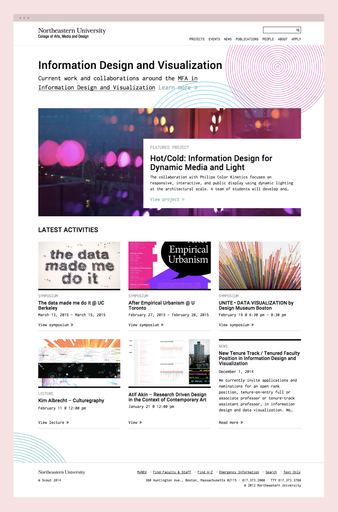
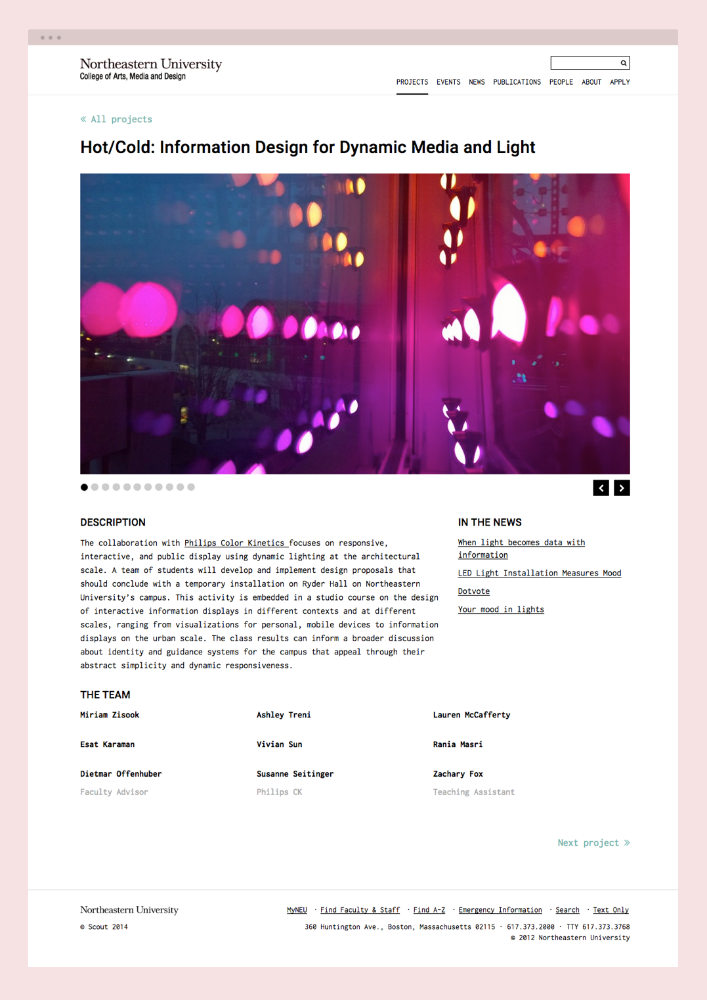

Northeastern Info Design and Visualization
- Project lead
- Web design
- Web development
This was a solo project that I worked on under Scout for the MFA program in information design and visualization at Northeastern. The website showcases the latest student and faculty projects and upcoming events within the department. I worked directly with the client and Scout’s design director for feedback on my designs, and developed a custom WordPress theme that offered flexibility of content.

